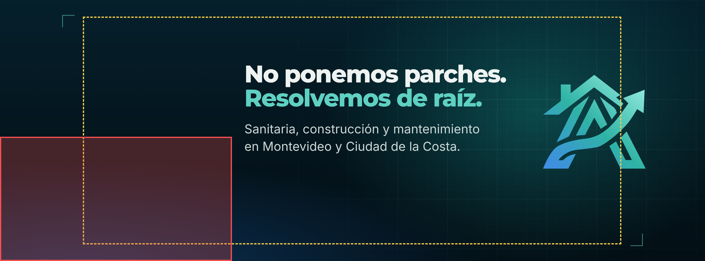

Kit de presencia digital
Más consultas,
menos vueltas.
Instagram, WhatsApp Business, Facebook y Google listos para que te encuentren, y una campaña de mensajes para conseguir consultas reales.
A. Servicios Integrales CatoiraFernando Catoira · Gestor técnico comercial
Preparado por Aicia
Noviembre de 2026
Kit de presencia digital
Antes de empezar
Cómo usar este kit.
Todo está pensado para que lo cargues vos, a tu ritmo, sin pasarle contraseñas a nadie. Seguí el orden: cada paso deja listo el siguiente.
| # | Qué hacés | Tiempo aprox. | Página |
|---|
| 1 | WhatsApp Business: pasar tu WhatsApp sin perder chats y dejarlo atendiendo solo. | 40 min | 4 |
| 2 | Instagram: cuenta profesional, perfil, destacadas y las 3 primeras publicaciones. | 45 min | 10 |
| 3 | Facebook: página de empresa con botón de WhatsApp. | 20 min | 12 |
| 4 | Google: Perfil de Empresa para aparecer en Maps y juntar reseñas. | 20 min + verificación | 13 |
| 5 | Campaña de mensajes: lista de 50 contactos, guiones y seguimiento en la planilla. | 20–30 min por día | 14 |
| 6 | Contenido: plan de 30 días y cómo crecer con reels. | Semanal | 18 |
Qué hay en la carpeta
| Carpeta | Contenido |
|---|
| 0-EMPEZA-ACA | Esta guía. |
| 1-perfil | Foto de perfil (el símbolo de tu logo redibujado en vector, nítido en el círculo chico), en fondo oscuro y claro. Logo en SVG. |
| 2-instagram/destacadas | 4 portadas: Servicios, Trabajos, Cómo trabajamos y Contacto. |
| 2-instagram/historias | 12 historias para las destacadas (la plantilla de Trabajos no se publica: es para tus fotos reales). |
| 2-instagram/publicaciones | 3 publicaciones 1080×1350, con sus textos en textos-para-copiar.txt. |
| 3-whatsapp | Portada del perfil de empresa y 10 imágenes para el catálogo. |
| 4-facebook | Portada de la página (y una versión "prueba" con las zonas que tapa Facebook). |
| 5-campana | Planilla de prospección (Excel) y textos para copiar. |
| 6-reel | Reel de presentación vertical, listo para publicar el primer día. |
Seguridad: nunca le pases tus contraseñas ni códigos de verificación a nadie (tampoco a nosotros). Si un paso te pide algo raro, frená y escribime por Workana.
Sobre los menús: los pasos se revisaron contra los centros de ayuda oficiales de WhatsApp, Instagram, Facebook y Google en noviembre de 2026. Las apps cambian seguido: si un botón tiene otro nombre en tu celular, buscá el más parecido. Lo que no pudimos confirmar está marcado como puede variar.
Kit de presencia digital
Así va a quedar
Tu Instagram, listo para vender.
Qué cambia
- Foto de perfil que se lee: solo el símbolo, redibujado en vector. El logo con texto no se leía en el círculo.
- Bio que dice qué hacés, dónde y cómo pedirlo, con el enlace directo a WhatsApp.
- 4 destacadas que responden lo que pregunta todo cliente: qué hacen, qué hicieron, cómo trabajan y cómo los contacto.
- 3 publicaciones de arranque: quiénes son (el manifiesto), qué hacen y por qué conviene un diagnóstico.
- Identidad propia: los colores de tu logo, un "plano técnico" de fondo y dibujos de línea propios. Nada de fotos de banco que no son tuyas.
Las piezas
1 · WhatsApp Business
Paso 1 · WhatsApp Business
Pasá a Business sin perder chats.
WhatsApp Business es gratis y usa tu mismo número (098 965 054). Tus conversaciones y archivos se pasan solos.
Antes
1Guardá en la agenda del teléfono los contactos que tengas guardados solo dentro de WhatsApp: según WhatsApp, esos se pueden perder al pasarte.
2Hacé una copia de seguridad: en WhatsApp, Ajustes → Chats → Copia de seguridad → Guardar.
3Actualizá WhatsApp y bajá WhatsApp Business desde Play Store o App Store (el ícono tiene una "B").
El cambio
4Abrí WhatsApp Business y aceptá los términos. Te va a ofrecer usar el número de tu WhatsApp: tocá Continuar.
5Dale permiso para pasar el historial (chats y archivos) y verificá el número con el código que llega por SMS.
6Poné el nombre A. Servicios Integrales Catoira y la categoría. Listo: tus chats siguen ahí, ahora en Business.
Ojo, es de una sola vía: si después volvés a WhatsApp común, los chats no vuelven. Y un número no puede estar en las dos apps a la vez.
¿Cambiás de celular? Según WhatsApp, por ahora no se pueden transferir chats de Business entre teléfonos. Por eso, hacé el cambio en el celular que vas a seguir usando.
1 · WhatsApp Business
Paso 2 · WhatsApp Business
Tu perfil de empresa.
Entrá a Ajustes (en Android, ⋮) → Herramientas para la empresa → Perfil de empresa y completá:
| Campo | Qué poner |
|---|
| Foto | 1-perfil/catoira-foto-perfil.png |
| Portada puede variar | 3-whatsapp/portada-whatsapp-business.jpg. La foto de perfil queda encima, en el centro: el diseño ya deja ese lugar libre. |
| Categoría | |
| Descripción | La de abajo. |
| Dirección | |
| Horario | |
| Correo | |
| Sitio web | |
Descripción · copiar y pegar
1 · WhatsApp Business
Paso 3 · WhatsApp Business
Que responda aunque estés trabajando.
El mensaje de bienvenida le contesta al instante a quien te escribe por primera vez y ya te pide lo que necesitás saber. Así, cuando agarrás el celular, tenés el caso entero.
Mensaje de bienvenida
Herramientas para la empresa → Mensaje de bienvenida → activalo → pegá el texto → destinatarios: Todos.
Bienvenida · copiar y pegar
Mensaje de ausencia
Herramientas para la empresa → Mensaje de ausencia → activalo → en Programar elegí Fuera del horario comercial (para eso tenés que haber cargado el horario) → destinatarios: Todos.
Ausencia · copiar y pegar
1 · WhatsApp Business
Paso 4 · WhatsApp Business
Respuestas rápidas.
Escribís "/" en cualquier chat y elegís la respuesta. Se crean en Herramientas para la empresa → Respuestas rápidas → +: pegás el mensaje y le ponés el atajo (sin la barra). Entran hasta 50.
1 · WhatsApp Business
Paso 5 · WhatsApp Business
Etiquetas y catálogo.
Etiquetas: saber en qué está cada consulta
En un chat, mantenelo apretado → Etiquetar → creá estas (entran hasta 20):
puede variar WhatsApp está cambiando las etiquetas por "Listas" de a poco. Si en tu app ves Listas, creá las mismas con estos nombres.
Catálogo: tus servicios a un toque
Herramientas para la empresa → Catálogo → Agregar artículo. Para cada servicio: la imagen de la carpeta 3-whatsapp/catalogo, el nombre y la descripción. El precio, vacío (presupuesto a medida).
puede variar Si tu versión no te deja guardar sin precio, no cargues un número inventado: avisame y lo resolvemos.
1 · WhatsApp Business
Paso 6 · WhatsApp Business
Los 10 servicios del catálogo.
Cada uno con su imagen (carpeta 3-whatsapp/catalogo, en este orden), su nombre y su descripción. Sin precio: presupuesto a medida.
2 · Instagram
Paso 1 · Instagram
Cuenta profesional y perfil.
Pasala a cuenta profesional
1En tu perfil, tocá ☰ → Configuración y actividad → Tipo de cuenta y herramientas → Cambiar a cuenta profesional.
2Elegí la categoría y después Empresa. Si algún día querés, se puede volver atrás.
Editá el perfil
En tu perfil → Editar perfil:
| Foto | 1-perfil/catoira-foto-perfil.png |
| Nombre | |
| Usuario | |
| Categoría | |
| Enlace | |
| Contacto puede variar | En Opciones de contacto o Botones de acción: correo, teléfono y WhatsApp. Instagram permite conectar un número de WhatsApp Business a una cuenta profesional: si te ofrece "WhatsApp", elegí el 098 965 054. |
Biografía · copiar y pegar (138 de 150 caracteres)
2 · Instagram
Paso 2 · Instagram
Publicaciones y destacadas.
1. Archivá (no borres) el flyer de hoy
Abrí la publicación → ⋯ → Archivar. Se esconde con sus likes y comentarios, y si algún día la querés de vuelta: Archivo → Mostrar en el perfil.
2. Subí las 3 publicaciones en este orden
Instagram muestra primero la última que subís, así que van al revés:
- Primero la 3 (humedad), después la 2 (servicios) y al final la 1 (No ponemos parches).
- Al subir cada una, revisá que se vea entera (formato vertical 4:5) y pegá su texto de textos-para-copiar.txt.
- Activá Compartir en Facebook si ya tenés la página (paso 3).
- Fijá la 1: ⋯ → Fijar en tu perfil.
3. Armá las 4 destacadas
- Subí las historias de una destacada (podés elegir varias juntas desde la galería).
- En tu perfil, tocá + Nuevo debajo de la bio, elegí esas historias y ponele el nombre.
- Portada: abrí la destacada → Más → Editar → Editar portada → elegí la portada de la carpeta destacadas.
| Destacada | Historias |
|---|
| Servicios | servicios-1 a servicios-5 |
| Trabajos | trabajos-1-portada (la plantilla no se publica: se completa con tus fotos reales) |
| Cómo trabajamos | como-trabajamos-1 a 4 |
| Contacto | contacto-1, con el sticker Enlace a wa.me/59898965054 |
Orden: la última destacada que creás o actualizás queda primera. Creá en este orden: Contacto, Cómo trabajamos, Trabajos y Servicios, así Servicios queda adelante.
Trabajos crece con vos: después de cada trabajo, mandame 2 fotos (antes y después) y 3 líneas (qué pasaba, qué hiciste y por qué dura), y lo armo con la plantilla.
3 · Facebook
Paso 3 · Facebook
Página de empresa.
La página es aparte de tu Facebook personal: vos la administrás, pero nadie ve tu perfil desde ahí. También la vas a necesitar si algún día hacés anuncios.
1Desde tu Facebook: Menú → Páginas → Crear nueva página. puede variar
3Presentación:Copiar y pegar
4Foto de perfil: 1-perfil/catoira-foto-perfil.png. Portada: en la página, Editar foto de portada → subí 4-facebook/portada-facebook.jpg → acomodala → Guardar cambios.
5Conectá WhatsApp: Configuración de la página → WhatsApp → poné el número → confirmá con el código.
6Botón: en la página → Opciones (⋯) → Agregar botón de acción → WhatsApp (si no aparece, "Enviar mensaje"). puede variar
7Vinculá Instagram: Configuración → Cuentas vinculadas → Instagram. Completá correo, teléfono y zona; el horario, cuando esté confirmado.

Medida recomendada por Facebook: 851×315 (la portada va al doble para que se vea nítida). Rojo: lo que tapa la foto de perfil. Amarillo: lo que se ve en cualquier pantalla.
4 · Google
Paso 4 · Google
Aparecé en Google Maps.
Cuando alguien busca "sanitaria en Solymar" o "limpieza de grasera Montevideo", Google muestra primero los Perfiles de Empresa. Es gratis, y ahí van a quedar tus reseñas.
1Entrá a google.com/business con el Gmail del negocio y tocá Administrar ahora.
4Si pregunta si los clientes pueden ir a un local: No (vas a domicilio). Si te pide una dirección para verificar, cargala y después ocultala: Editar perfil → Ubicación → desactivá Mostrar la dirección de la empresa a los clientes.
5Zonas de servicio: Google pide que no pasen de unas 2 horas de manejo desde tu base.
6Verificación: Google elige el método. Lo más común hoy es un video: una sola toma, sin cortes, de al menos 30 segundos, grabada desde el celular en la app. Mostrá las calles o carteles de tu zona y algo con el nombre del negocio (herramientas, tarjeta, vehículo).
Descripción · copiar y pegar
Reseñas: tu mejor vendedor
En tu perfil → Leer reseñas → Obtener más reseñas → copiá el enlace y pegalo en la respuesta rápida /resena. El QR solo se genera desde la compu.
Regla de Google: no se puede ofrecer descuentos ni regalos a cambio de reseñas. Pedila siempre, y al momento: cuando el cliente ve el trabajo terminado.
5 · Campaña de mensajes directos
Paso 5 · Campaña
Consultas reales, sin esperar.
El perfil hace que confíen en vos cuando te encuentran. La campaña hace que te encuentren hoy: le escribís, de a uno y con un mensaje pensado, a quien más trabajo te puede dar.
A quién le escribís (lista de 50)
Dónde los encontrás
Google Maps
Buscá el rubro + el barrio. Cada resultado trae teléfono y, muchas veces, WhatsApp e Instagram. Por ejemplo:
Montevideo: .
Ciudad de la Costa: .
Instagram
- Buscador: "administración edificios montevideo", "inmobiliaria ciudad de la costa", "rotisería solymar".
- Ubicaciones: en el buscador, pestaña Lugares, mirá los comercios de cada barrio.
- Seguí la cuenta antes de escribir y dale like a 1 o 2 publicaciones: tu mensaje llega a la bandeja principal, y no a solicitudes, más seguido.
Cómo armás la lista
Cargala en la planilla-prospeccion-catoira.xlsx (hoja Contactos): nombre, tipo, zona y cómo contactarlo. Con 15 por semana, la completás en menos de un mes.
Para que no parezca spam (y WhatsApp no te bloquee): mensajes de a uno, con el nombre del negocio, nada de difusiones masivas. Máximo 10 a 15 primeros mensajes por día. Si alguien te pide que no le escribas, se respeta y se anota.
5 · Campaña de mensajes directos
Guiones · primer mensaje
Qué escribir.
Cortos, con tu nombre y una sola pregunta fácil de responder. No venden en el primer mensaje: abren la conversación.
5 · Campaña de mensajes directos
Guiones · seguimientos y respuestas
Seguimiento: donde se gana.
La mayoría no responde el primer mensaje por falta de tiempo, no porque no le interese. Dos seguimientos, sin presionar, y listo.
5 · Campaña de mensajes directos
Recomendaciones, reseñas y medición
Que te recomienden.
Cómo medir (planilla)
- Cada contacto en una fila de Contactos. Cuando le escribís, poné la fecha: los días de seguimiento se calculan solos.
- Cambiá los Sí/No a medida que avanza: respondió, visita, presupuesto y cerrado.
- La columna Estado se pinta de naranja cuando toca seguimiento: filtrala cada mañana.
- Los viernes, mirá el Resumen semanal.
| Meta semanal | Número |
|---|
| Contactos nuevos (3 por día hábil) | 15 |
| Seguimientos del día 3 y del día 7 | Todos al día |
| Respuestas, visitas y cierres | Se miden |
La meta es de actividad, que depende de vos. Con los números de las 2 primeras semanas ajustamos la de visitas y cierres: no tiene sentido inventarla antes.
6 · Contenido
Plan de contenido · 30 días
Qué publicar este mes.
2 publicaciones por semana (martes y viernes, por ejemplo) y 3 historias. Mezcla de los tres pilares de tu marca: preventivo (autoridad), antes y después técnico (confianza) y conversión (visita diagnóstica y planes para edificios).
| Semana | Publicaciones | Historias |
|---|
| 1 | Lanzamiento: las 3 publicaciones del kit + el reel de presentación. | Destacadas armadas. "¡Arrancamos!" + enlace a WhatsApp. |
| 2 | ① Reel preventivo: graseras · ② Carrusel: azotea antes del invierno | Tip del día · encuesta · un trabajo en curso |
| 3 | ③ Reel antes y después: humedad · ④ Reel: antes de comprar una casa | Detrás de escena · pregunta en caja · reseña (si hay) |
| 4 | ⑤ Post para administradoras · ⑥ Reel antes y después: tanque de agua | Trabajo terminado · recordatorio de visita |
Los antes y después (③ y ⑥) necesitan trabajos reales. Si en esas semanas no hay, cambialos por un preventivo y corrélos para cuando tengas el material. Nunca uses fotos de otros como si fueran tuyas.
6 · Contenido
Plan de contenido · guiones
Guiones de los reels.
6 · Crecimiento
Cómo crecer
Reels, filmación y anuncios.
Por qué reels
Instagram también muestra los reels a personas que no te siguen (en la pestaña Reels y en Explorar). Con una cuenta nueva, son la forma más directa de que te vea gente de tu zona. Y tu oficio es muy filmable: un antes y un después se entiende sin explicar nada.
Checklist para filmar cada trabajo
- Celular en vertical, lente limpia, 1080p o 4K.
- Antes de tocar nada: un plano general y uno de cerca del problema.
- Desde el mismo lugar y ángulo para el antes y el después: marcá dónde te paraste.
- Clips cortos (3 a 5 s) mientras trabajás: herramienta, detalle, avance.
- Luz de frente o natural, nunca a contraluz.
- Si explicás algo, filmate cerca del celular o con micrófono de solapa: el audio importa más que la imagen.
- Pedí permiso al cliente, y que no se vean caras, direcciones ni matrículas.
Edición
Lo que más diferencia a un reel es la edición: cortes rápidos, subtítulos y un buen gancho al principio. Conviene que lo haga alguien con práctica, así vos seguís con los trabajos. Si querés, lo vemos con Aicia.
Anuncios en Meta (cuando quieras invertir)
- Objetivo: mensajes a WhatsApp (el anuncio abre un chat directo con vos).
- Dónde: Montevideo y Ciudad de la Costa.
- Arranque: 2 anuncios (humedad y mantenimiento preventivo), 7 días con un presupuesto diario chico. Después se mira cuánto costó cada conversación y cuántas pasaron a visita.
- Presupuesto: a definir con vos. Lo pagás directo a Meta con tu tarjeta, desde tu cuenta publicitaria: nadie maneja tu plata.
- Antes de anunciar: la página de Facebook conectada a WhatsApp y el perfil completo, para que quien llegue confíe.
Kit de presencia digital
Para terminar
Lo que necesito que me confirmes.
Para no inventar nada, estos datos quedaron abiertos. Con tu respuesta por Workana, ajusto las piezas.
| Qué | Para qué |
|---|
| Horario de atención | Perfil de WhatsApp (y el mensaje de ausencia), Google y Facebook. |
| Fotos reales de trabajos (antes y después) | La destacada Trabajos, los reels ③ y ⑥, el catálogo y Google. Con 2 o 3 trabajos alcanza para arrancar. |
| Logo original (archivo del diseñador, si existe) | Ya redibujé el símbolo en vector. Si existe el original, lo comparo para que quede idéntico. |
| "Garantía por escrito" / "Calidad garantizada" | Aparece en dos flyers. Si das garantía, ¿en qué condiciones? Hasta saberlo, no la usé en ninguna pieza. |
| Beneficio por recomendación | El mensaje para pedir recomendaciones tiene un espacio para eso, si querés ofrecer algo. |
| Presupuesto para anuncios | Si los hacemos ahora o en una segunda etapa, y con cuánto por día. |
| Condiciones de la comisión por cierre | Porcentaje, sobre qué trabajos y cómo se registra (la planilla ya tiene la columna de monto cerrado). |
Próximos pasos
- Cargá WhatsApp, Instagram, Facebook y Google siguiendo este orden (1 o 2 tardes).
- Mandame una captura de cada perfil terminado y lo reviso.
- Empezá la campaña: 3 contactos por día y los seguimientos al día.
- En 2 semanas miramos juntos los números de la planilla y ajustamos.
A. Servicios Integrales CatoiraKit preparado por Aicia · Cualquier duda, por el chat de Workana.